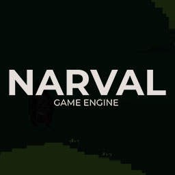
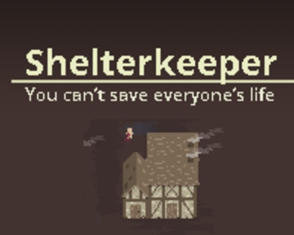
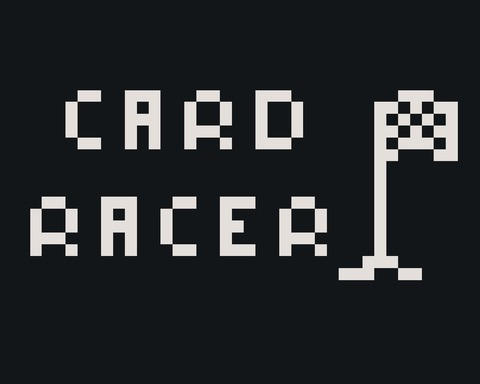

-
Real-time volumetric light transport with support to multiple scattering
Igor B. Fernandes and Marcelo Walter (Orientator).
Work in progress at Universidade Federal do Rio Grande do Sul (UFRGS) in order to obtain the title of MSc. in Computer Science. To be published. -

Math lib
Igor B. Fernandes
Work in progress. Small implementation of common math functions in order to study how those are approximated and their performance implications. -

2D game engine Narval development in OpenGL and Java
Igor B. Fernandes and Maria Adriana V. de Lima (Orientator)
Final work dissertation required to graduate in Computer Science at Universidade Federal de Uberlândia (UFU). -

Ludum Dare 42
Igor B. Fernandes and Iasmin B. Fernandes.
Entry at Ludum Dare 42th edition. Competition held for two days where you have to create a game from scratch given a theme. Done on early versions of my own personal 2D game engine Narval. -

Ludum Dare 41
Igor B. Fernandes and Iasmin B. Fernandes.
Entry at Ludum Dare 41th edition. Competition held for two days where you have to create a game from scratch given a theme. Done on early versions of my own personal 2D game engine Narval. -
Post-Occupancy Evaluation in Residential Buildings using an Interactive Interface and Mobile Devices
Aline de S. Lima Abreu, Miguel H. de Brito Pereira, Igor B. Fernandes, Maria Adriana V. de Lima and Simone Barbosa Villa.
WICSI - Workshop de Iniciação Científica em Sistemas de Informação. -
Eron guias
Igor B. Fernandes.
Huge website created and held by me for a few years at the address eronguias.com. It contained tutorials, a item database and other useful tools such as maps and worker calculators for the game Black Desert Online. -
Como você mora?
Igor B. Fernandes et. al.
Scientific initiation at Universidade Federal de Uberlândia (UFU). Development of a mobile app using Corona SDK in Lua. More info can be found on projct page.